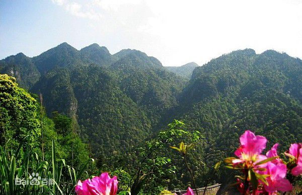
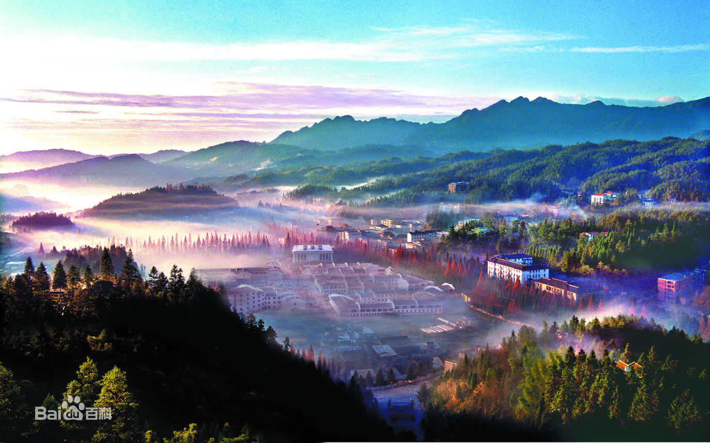

井冈山：地处湘东-赣西边界，万洋山（为罗霄山脉中段）的北支，据传在东汉年间就已经有人在井冈山居住了。
秦朝设郡县制时，井冈山为九江郡庐陵县属地。
井冈山距井冈山市新城区（红星街道）35公里，距吉安市吉州区约130公里处。森林覆盖率为81.2%，年平均气温14.2度，至今仍保留众多人迹未至的大片原始森林，是世界上最有代表性的山地亚热带常绿阔叶林区，代表性的植物有红豆杉、银杏、半枫荷、白豆杉、伯株树等上千种。井冈山瓷土矿、稀土矿储量丰富，为两大优势矿种。 井冈山被誉为“中国革命的摇篮”。
井冈山属亚热带季风气候，四季分明，雨量充沛，年平均气温14.2度，一月份为最冷月，平均温度3.2度，七月份最热月，平均气温仅为23.9度，极端最高温度也只有34.8度；年平均降雨量1856.3毫米，年平均降雨日213天，年平均日照1511小时，平均雾日96天。茨坪因海拔高度和四面环山的地形影响，具有冬长、夏短、秋早、春晚的特点。
不好意思老师，这次是赶出来的，这个星期太忙了